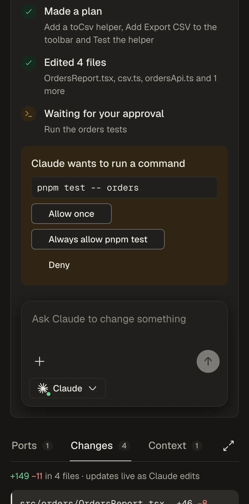

Plug and play · Runs on your laptop
Hand your agent the ticket. Keep your flow.
One inbox for your Jira and GitHub work. Claude builds each ticket in its own git worktree, and asks first or ships the pull request, as you choose.

- Runs on your laptop
- Tokens stay in your OS keychain
- You set what needs your click
Plug in the tools and agents you already use
- Jira
- GitHub
- Claude
- Slack Soon
- More plug-ins Coming
The app
Everything around your code. One place.
Your sprint, with the agent on every card.

Watch every step. Approve with one click.

Pick how far the agent goes on its own.

Your own logins, kept in your keychain.

How it works
Ticket to pull request. Four steps.
-
Pick a ticket
Or describe the task, with pull requests and files as context.
-
It gets a worktree
A fresh branch. Your own checkout stays untouched.
-
Your rules decide
Allow, ask or block each kind of call it makes.
-
Ship it
Open the pull request in one click, or let the agent do it.
On any device
Approve from your phone.
Open orynx.local on your wifi, enter your Orynx password, and add it to your home screen.
- https://orynx.local
- Your password first
- Installs as an app

The details
Small things that add up.
- ⌘K to search everything
- Paste a Jira key or PR link
- A live diff
- Follow-ups, not restarts
- Your own /skills
- Model and effort per task
- A real terminal per session
- The servers Claude started
- Board or list
- Pin and rename sessions
- Alerts when Claude waits
- A log of every sync
Local-first
Your workspace. On your machine.
There is no Orynx cloud.
-
Tokens in your keychain
They never reach the browser.
-
Bound to 127.0.0.1
Plus orynx.local, behind your password.
-
One local cache
Tickets and pull requests in a file on your disk.
-
Only what you connect
Jira, GitHub and Claude today.
- Node 24, or nvm to install it
- Claude Code, signed in
- A Jira API token, and gh or a GitHub token
Then open http://127.0.0.1:4317 to pick your name and password.
# Clone, build, start at log-in
git clone https://github.com/orynx-ai/orynx.git
cd orynx
./install.sh
# → https://orynx.local, here and on your wifiFAQ
Questions, answered.
Does my code leave my computer?
Orynx has no cloud. Claude reads the files a task needs through your own login, exactly as Claude Code does in your terminal. Jira and GitHub are called with your own tokens.
Which Claude account does it use?
The one Claude Code already has on your computer: a claude.ai account, an API key, Amazon Bedrock or Google Vertex. Orynx needs no key of its own.
Can the agent push or open a pull request by itself?
Only if you allow it. A fresh Orynx never pushes. Pick Hands-off in Settings › Coding agent, or set Push the branch and Open a pull request to Allow.
Does it change my working copy?
No. Every session works in its own git worktree on its own branch.
Can I use it from my phone?
Yes, on the same wifi. Open https://orynx.local, enter your Orynx password once, and trust Orynx's certificate from http://orynx.local/orynx-ca.crt. Your code and tokens stay on the computer that runs Orynx.
What comes next?
Slack mentions, once your workspace admin approves the Slack app. Then more connectors and coding agents, each a small adapter that gets the same screens and permissions.